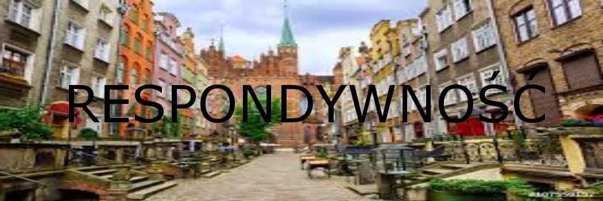

CSS, a RWD
RWD jest w głównie wykorzystywany do automatycznego dostosowywania strony do rozdzielczości urządzenia, aby była czytelna.<br> CSS jest używany, aby zmienić wygląd strony, a nie aby ją dostosować do rozdzielczości użądzenia.